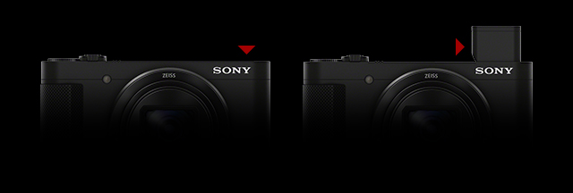
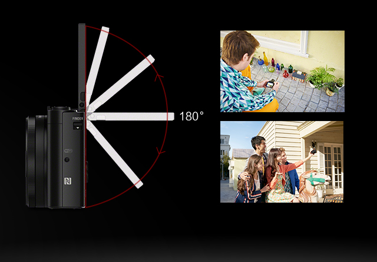
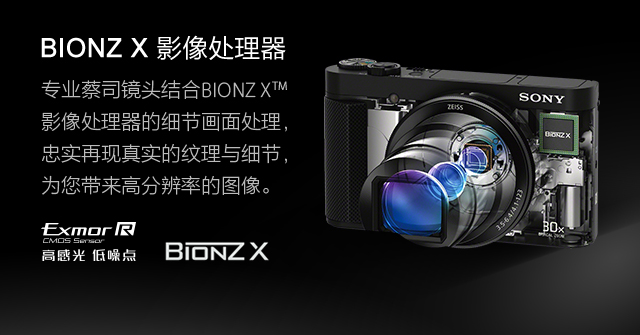
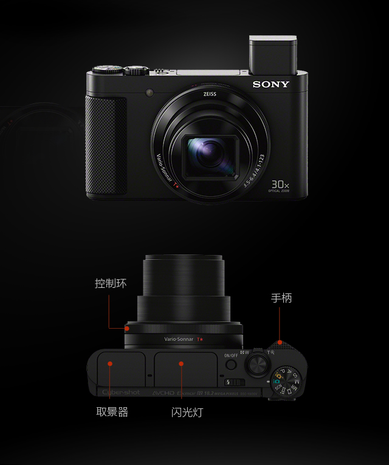
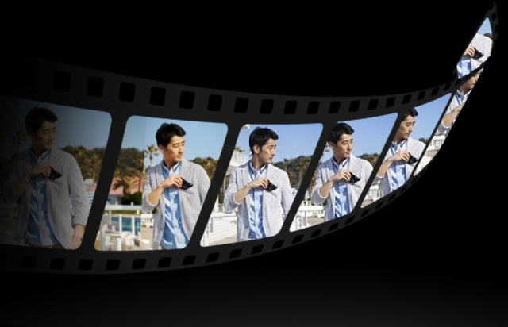
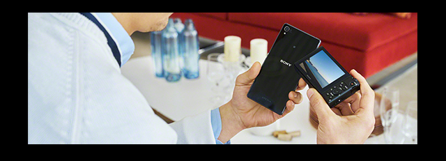
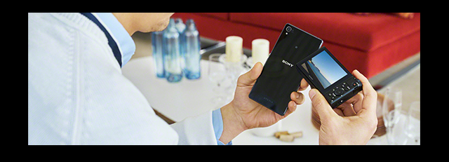

DSC-HX90可以透过高对比度、高分辨率的约64万有效像素
OLED Tru-Finder电子取景器进行取景，
让你的视野变得更专业，方便清晰构图取景。
DSC-HX90巧妙地采用了弹出式设计，拨动机身侧面FINDER按键，取景器便可弹出，拉出目镜，即可进入取景拍摄状态。
内置可弹出式OLED Tru-Finder取景器，提供了中心区域
更高质量的可视性，并减少了边缘区域的失真和变形。
DSC-HX90配备30倍光学变焦的蔡司 Vario-Sonnar T* 镜头，
配合清晰影像缩放以及优越的长焦防抖技术，
为您捕捉触手不及的美景。
DSC-HX90配备有3.0英寸约92万像素 ，180°可翻折Xtra Fine液晶屏，内置美肤效果，并支持倒数自拍功能，为创意自拍，合影留念以及多角度拍摄提供了更高的便利。
DSC-HX90配备了高达约1820万有效像素的Exmor R CMOS影像传感器，确保影像高解析度、低噪点。
DSC-HX90在具备30倍光学变焦能力的同时，采用超紧凑小巧的一体化机身设计，内置可弹出式 OLD Tru-Finder 取景器180°可翻折液晶屏和闪光灯。 为您捕捉旅行途中的美。
BIONZ X影像处理器将视频质量提升至更高水准，配合“五轴防抖”（光学防抖智能增强模式*2*3）加强动态拍摄的平稳性。视频记录格式，除去AVCHD，还提供专业的XAVC S。高清视频拍摄（1920x1080）具备50p以及50Mbps的高比特率。

XAVC S格式常为严谨的摄像师所用，由专业记录格式XAVC发展而来，能以高达50Mbps的比特率实现出色高分辨率的动态影像，带来了更低的压缩比，更精致的高画质，即便在运动场景时也能表现如一。

光学防抖智能增强模式有效减少行走拍摄时的抖动，让您可更自由地享受手持拍摄的乐趣*2*3。该功能是由索尼先进的逐帧分析技术和五轴防抖技术一起出色运作所带来的。此外，该技术还能通过半按快门按钮，使取景器和液晶屏中的画面保持稳定。
只需下载免费 PlayMemories Mobile 应用，您可通过 Wi-Fi*5 或 NFC*6（近场通信）将相机连接至兼容的 Android/iOS 智能手机或平板电脑*7。连接中，可从该移动设备远程控制相机的快门释放，在设备上即时接收图像并可上传至社交网站。

 

DSC-HX90可安装相机应用程序，智能遥控/美颜工坊/同步到智能手机等，让您自由挥洒拍摄创意，照片更具个性化。
* PlayMemories相机应用程序服务请登入
https://www.playmemoriescameraapps.com/portal/
注册有效账户和下载。
“智能遥控“内容已为您预装在相机中，“美颜工坊”、
“同步到智能手机”可连接上网设备，由上述网站下载安装。
*1.示意图
*2 光学防抖效果会根据拍摄条件和环境有所不同，因此不能始终确保理想效果。在某些拍摄条件下防抖效果的改善可能会比较微弱。
*3 智能增强模式不可兼容120p/60p/50p XAVC S格式，不可兼容60p/50p AVCHD格式。
*4 采用XAVC S格式拍摄动态影像时，需要使用级别10或以上的SDXC存储卡。
*5 智能手机/平板电脑需预装“PlayMemories Mobile”软件。WiFi即时分享功能可能因环境、智能手机/平板电脑的规格和/或安装软件的限制而失效。
*6 需要支持NFC(近场通信)一触功能的智能手机/平板电脑才能使用，且智能手机/平板电脑必须预装了Android 4.0或以上版本的操作系统及“PlayMemories Mobile”3.1或以上版本的应用软件。一触功能可能因环境、智能手机/平板电脑的规格和/或安装软件的限制而失效。一触遥控操作时可能会发生画面不流畅的现象。具体请咨询店内销售人员。
*7 智能手机/平板电脑需预装“PlayMemories Mobile”软件，且需开启WiFi功能。智能手机控制功能时可能会发生监控画面不流畅的现象。智能手机控制功能可能因环境、智能手机/平板电脑的规格和/或安装软件的限制而失效。具体请咨询店内销售人员。